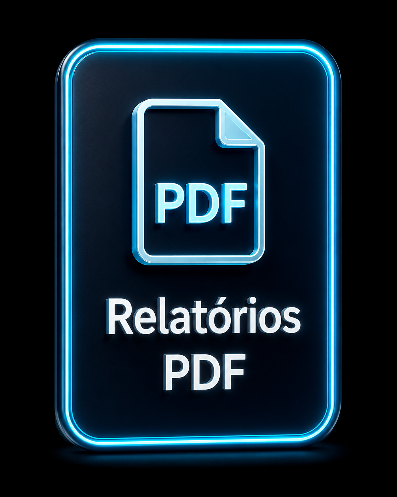
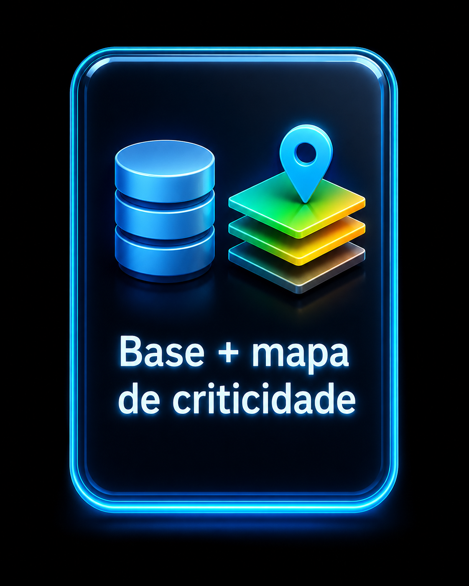
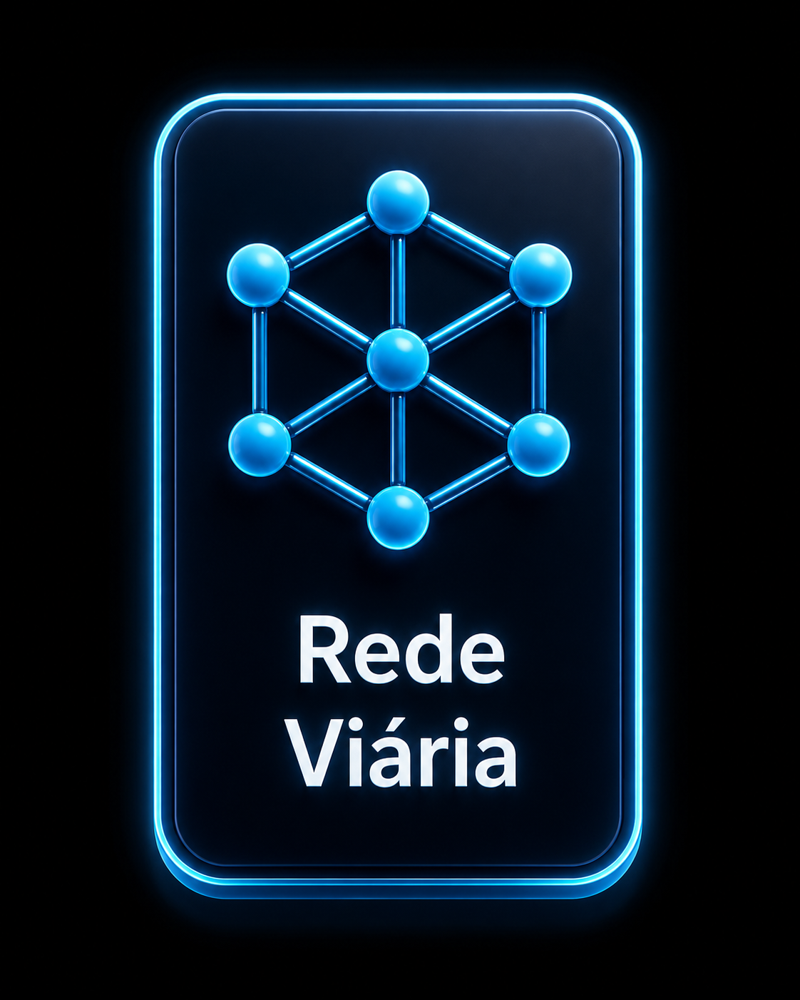
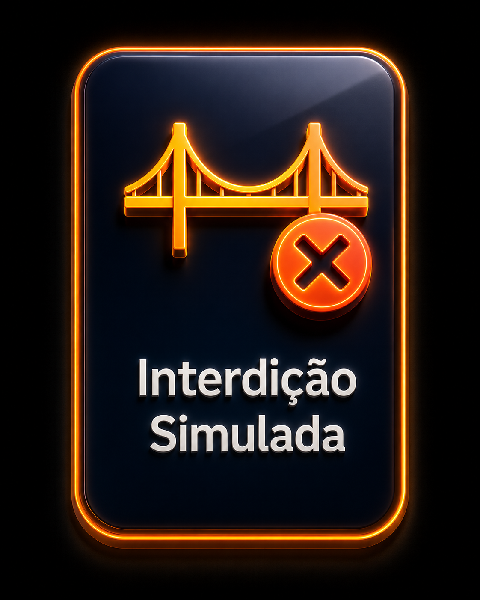
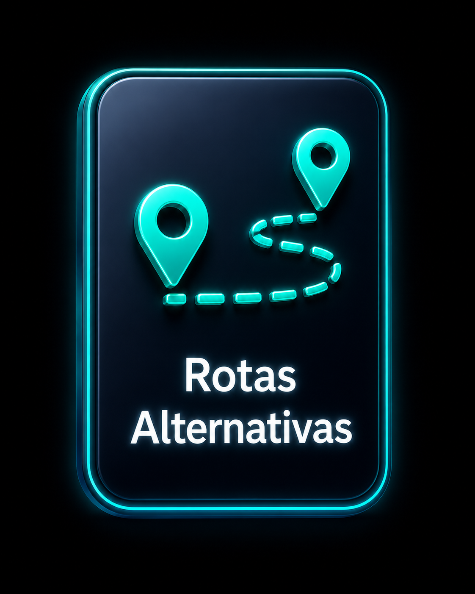
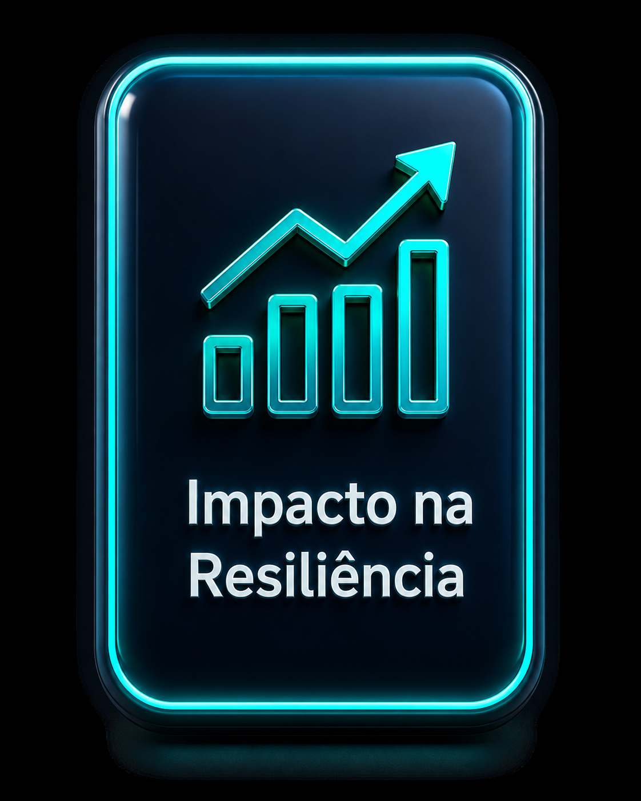
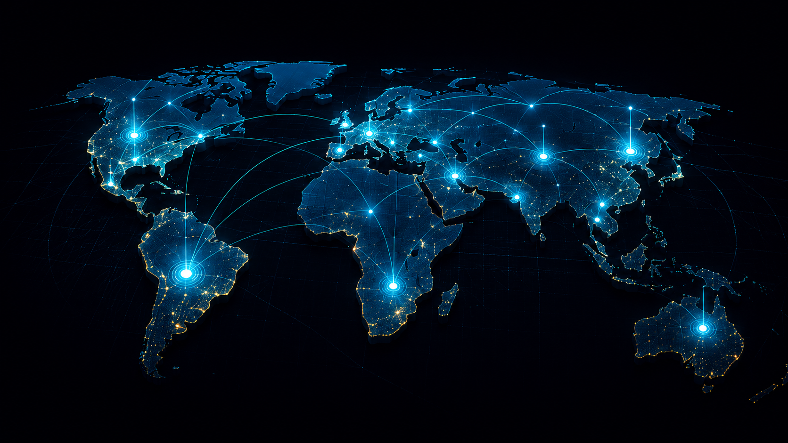
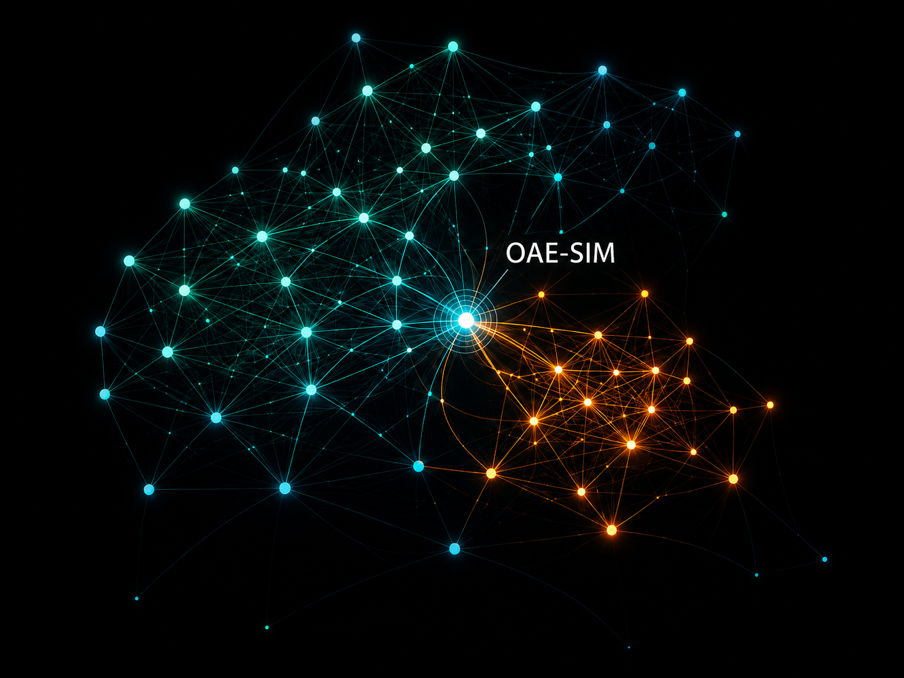
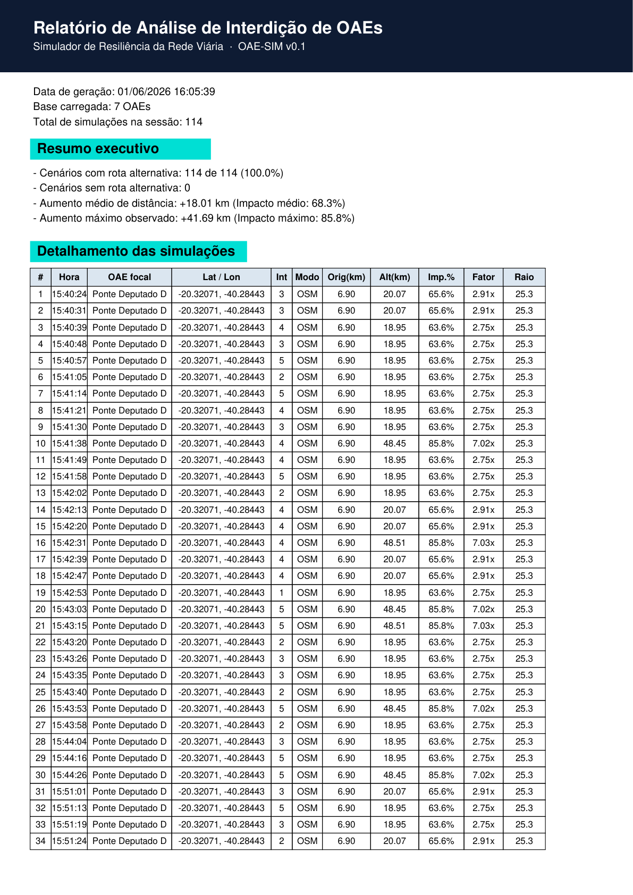
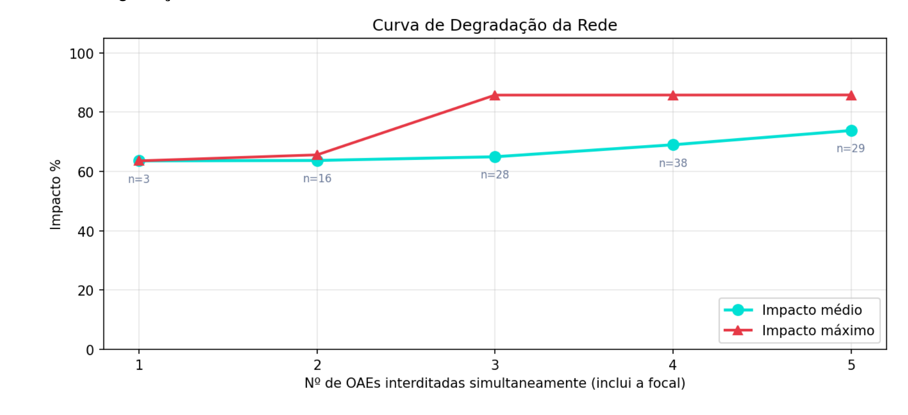

OAE-SIM · Infraestrutura crítica · Resiliência viária
Resiliência da Rede Viária
diante da Interdição de OAEs Críticas
A interdição de uma OAE crítica pode comprometer a acessibilidade, aumentar desvios e afetar a resiliência da malha.
Quando uma OAE crítica é interditada, a rede ainda pode ter caminho — mas com desvio operacional elevado.
Como medir o impacto da interdição na malha?
Do PDF ao impacto na resiliência — o método OAE-SIM







EUA Reino Unido China Austrália Canadá Alemanha Brasil ÍndiaPosicionamento científico · presença global da produção

Rede de coocorrência de termos · 2 clusters
Network resilience Accessibility WebGIS Bridge Maintenance Machine learningacadêmicos
chave
temáticos
Estudo de caso · Vitória/ES
Vitória/ES: capital insular
e 7 OAEs estratégicas
As pontes deixam de ser apenas estruturas — tornam-se conexões críticas da rede.
Base georreferenciada · grafo viário
Da base georreferenciada ao grafo viário
O OAE-SIM organiza dados de OAEs e os conecta à malha urbana.
Cada OAE deixa de ser um ponto no mapa e passa a ser um elemento crítico da rede.
Entrada
Padronização
Mapa
Grafo
Rede viária computável
Simulação · interdição & rota
Interdição simulada: o teste de resiliência da rede
A ponte é bloqueada, a rede responde e o desvio revela o impacto funcional.
Ter rota alternativa não significa baixo impacto.
Resultados · simulações consolidadas
Resultados consolidados das simulações
A conectividade foi mantida — mas com penalidade operacional expressiva.


Ter rota alternativa não significa baixo impacto.
Apoio à decisão · priorização
Priorização de manutenção: estrutura + rede
O ranking combina Nota Geral da OAE e impacto médio nas simulações.
Criticidade estrutural
Nota Geral da OAECriticidade sistêmica
Impacto funcional na redeCriticidade estrutural ≠ criticidade sistêmica.
Priorizar não é só olhar a ponte. É entender o papel dela na rede.
Encerramento · contribuição
Do diagnóstico à decisão: resiliência aplicada à rede viária
OAE-SIM como apoio à manutenção, contingência e priorização de intervenções.
O que foi demonstrado
- Base real de OAEs
- Rede viária modelada
- Interdição simulada
- Rotas alternativas
- Impacto medido na malha
O que o OAE-SIM entrega
- Visão sistêmica
- Apoio à decisão
- Priorização de manutenção
- Apoio à contingência
- Leitura territorial do impacto
Próximos passos
- Escalonar para outras cidades
- Integrar dados em tempo real
- Evoluir para suporte operacional
- Apoiar gestão de ativos e mobilidade
O simulador OAE-SIM em funcionamento
Do ativo isolado à inteligência de rede.
Da inspeção em PDF ao impacto na resiliência.